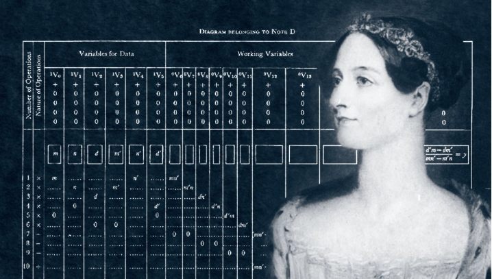
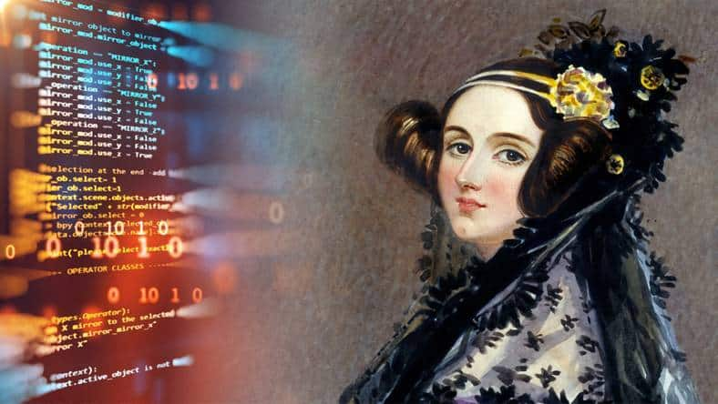
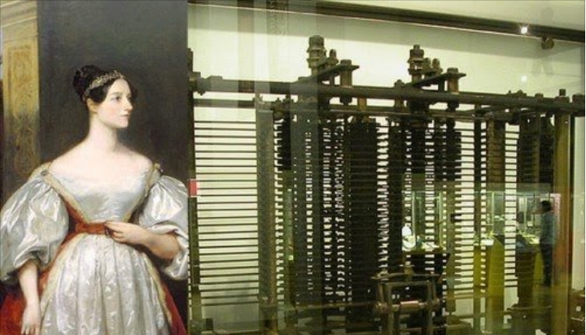

Quem foi Ada Lovelace?
A primeira programadora da história



Primeiros anos de vida da “Senhora Fada”

Filha do poeta Lord Byron (autor de Don Juan e expoente do Romantismo) e da baronesa Anne Isabella Milbanke – conhecida como Lady Byron –, Ada Lovelace nasceu em 10 de dezembro de 1815. Por influência da mãe – que a criou – ainda na infância ela desenvolveu interesse pela ciência. A ideia era que a menina tivesse uma base de conhecimento que a afastasse do que a mulher chamava de “insanidades” do pai.
Legado de Ada Lovelace
As notas de Ada Lovelace só foram republicadas mais de cem anos após sua morte. Apesar de tardio, o reconhecimento por seu trabalho fizeram-na ser referenciada como a primeira programadora da história, uma vez que suas anotações foram observadas como sendo a primeira descrição de um software. O pioneirismo foi sublinhado por Alan Turing, conhecido como o “pai da computação moderna”, que fez referência ao trabalho de Lovelace em suas pesquisas. A linguagem de programação Ada foi criada em homenagem a ela pelo Departamento de Defesa dos Estados Unidos e formalizada em 1980. Um ano depois, a Associação de Mulheres na Computação criou o Prêmio Ada Lovelace. Em 1998, A Associação Britânica de Computação criou a Medalha Lovelace.
Em 2016, em Londres, foi inaugurada a faculdade Ada National College for Digital Skills, focada em tecnologia, em homenagem à cientista. Já em 27 de julho de 2018, o senador americano Ron Wyden estabeleceu 9 de outubro como Dia Nacional Ada Lovelace, tendo como justificativa honrar a vida e as contribuições dela “como uma das principais mulheres em ciências e matemática” da história. Antes, toda terça-feira de outubro já era considerada “Ada Lovelace Day”.